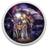

 Starflight 2
Details
Description
In Starflight 1 you embark on a mission to save the galaxy’s future by discovering the secrets of its past. With over 800 unique planets in 270 systems to explore, you never know what might lurk behind the next star. Each newly explored system might lead to a powerful artifact, a mysterious alien race, or another piece of the puzzle that will unravel the ultimate mystery. And that's the really great thing about this game: the feeling of exploration and fulfilling that deep human need that drives us towards the unknown.
Starflight 2 keeps all the great gameplay of its predecessor, but makes everything bigger and better. Many aspects of the game were vastly enhanced: the game’s diplomacy, the size of the galaxy, and the number of alien races you can interact with are all improved the second time out. The gameplay—if not the graphics—are reminiscent of another classic game in our catalog where you wander around the galaxy exploring stars and chatting with humorous aliens who want to control the galaxy. The plot starts you out in a standard science fiction mode, but it builds to a fascinating and satisfying climax at the end. Basically, if you enjoyed Starflight 1, the sequel will be right up your alley.